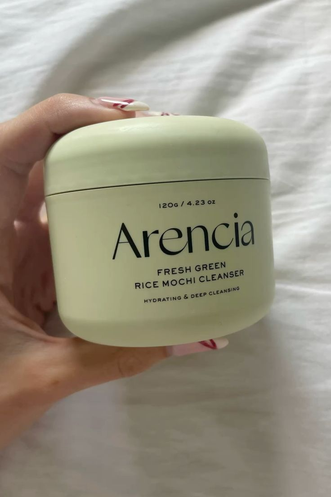
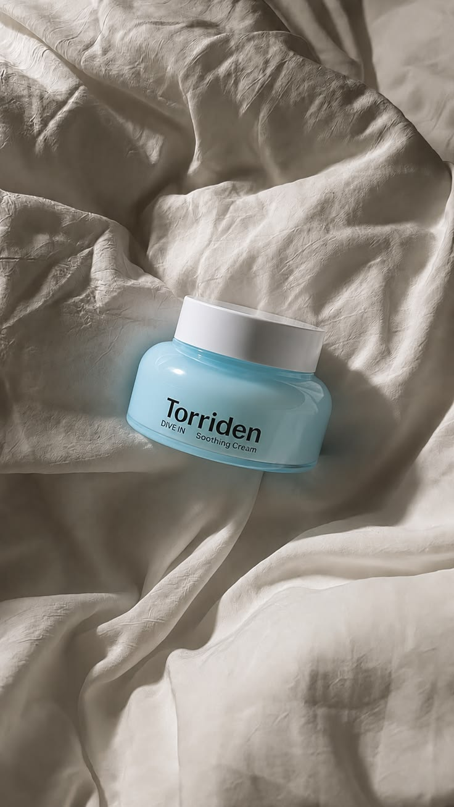
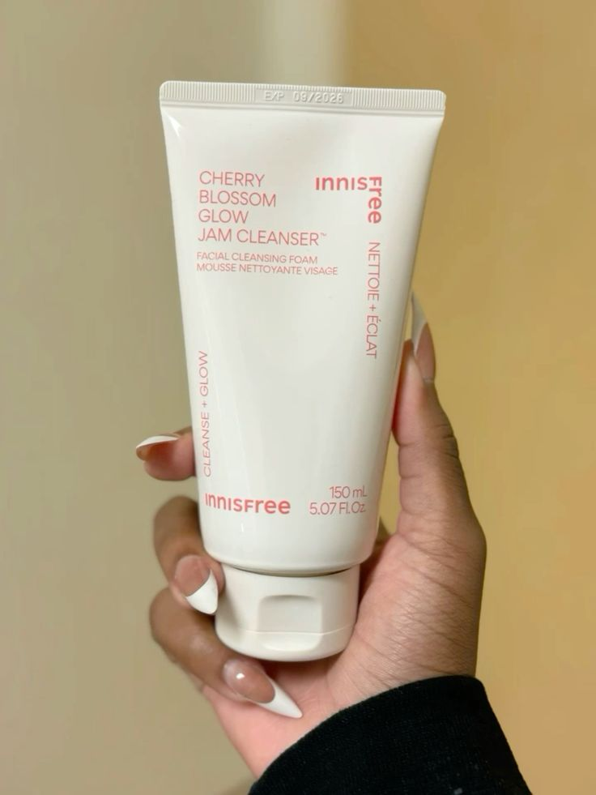
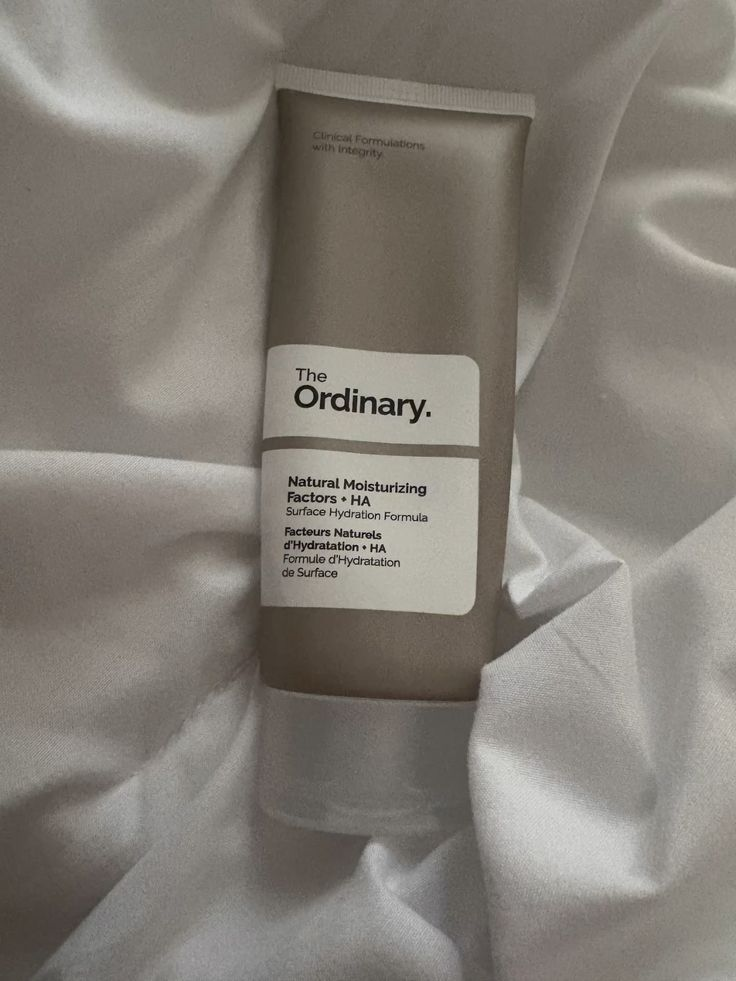

discover the best products for your skin!

removes excess oil without stripping your skin's natural barrier. arencia is a popular south korean vegan brand famous for their rice mochi cleansers.
key ingredients include fermented green tea, rice water, witch hazel, and mung bean extract.

hydration is key to keeping your skin healthy and balanced. torriden's waterfull moisture cream is a lightweight, non-greasy moisturiser that provides long-lasting hydration.
it includes malachite extract, panthenol (vitamin B5) and botanical extracts.

a gentle cleanser that doesn't cause the skin to produce excessive oil is vital for healthy, glowing skin.
the innisfree jeju cherry blossom cleansing foam contains cherry blossom extract, which helps to soothe and hydrate the skin.

having a scent-free moisturiser is crucial for preventing breakouts and redness.
the ordinary natural moisturiser has 11 amino acids, hyaluronic acid, and ceramides.